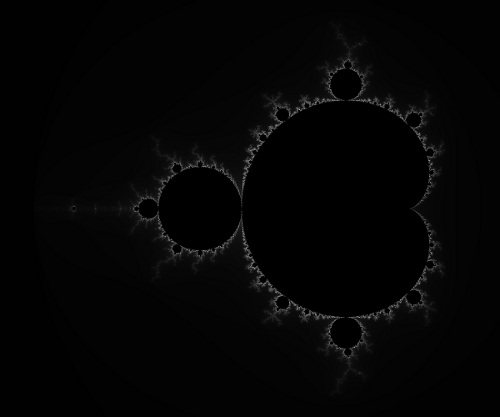

Exploring the beautiful world of fractals
The Mandelbrot Set

A Crash Course in Complex Numbers
To draw the Mandelbrot set, we need to understand complex numbers.
-
A complex number consists of a real part (x) and an imaginary part (y), usually represented as
Z = x + iy -
The usual rules of multiplication apply, as long as one remembers that
i * i = -1 -
Squaring a complex number is done this way
Z * Z = (x + iy) * (x + iy) = x * (x + iy) + iy * (x + iy)
= (x * x) - (y * y) + i(2 * x * y) -
Treating the real and imaginary components like the X and Y components
of the 2D Cartesian plane, we get the Argand Plane.
We can "center" and "stretch" each dimension (component) independently.
So, for instance, we could map 2D points that form a rectangle on-screen onto another rectangle in the Argand Plane. -
The "modulus" of a complex number Z, represented by |Z|, is its distance from the origin in the Argand Plane.
|Z| = sqrt((x * x) + (y * y))
Plotting the Mandelbrot Set
To color a single pixel, first convert it into a point on the Argand Plane, then figure out a number using the following method (given below), then finally map this number to a color.
-
Set the complex number C to the current pixel's position (via your chosen mapping) in the Argand plane
C = x + iy
Usually the current pixel's position spans (0, 0) to (width - 1, height - 1)
and one possible mapping (for a square image) is onto the range (-2.5, -2) to (1.5, 2) -
Initialize the complex number Z to C
Z = C -
To get the new value of Z, square Z and add C to it
Z = (Z * Z) + C -
Repeat the square-and-add step until |Z| exceeds 2.
An equivalent check is to compare the square of |Z| against 4.
(x * x) + (y * y) < 4 -
Either the comparison fails after a certain number of repetitions, or it never fails.
Hence we don't repeat the square-and-add step indefinitely, but terminate after a "max iteration limit".
The number of iterations completed (before the check fails) is our number for this pixel.
If the check never fails (and hits the max limit instead), the pixel is usually colored black. -
A quick mapping from iteration count to a color is to set the grey level based on
what percentage of the max limit was reached:
level = iteration_count / MAX_ITERATION_LIMIT
(r, g, b) = (level, level, level)
(when MAX_ITERATION_LIMIT is reached, we choose black)
Code
First of all, here's the mapping from the screen coordinate system (row, col) to the Argand Plane (x, y):
void map_to_xy(unsigned int row, unsigned int col,
unsigned int height, unsigned int width,
float& x, float& y)
{
x = -2.5f + ((col * 1.0f) / width) * 4.0f;
y = 2.0f - ((row * 1.0f) / height) * 4.0f;
}
Here's the repeated square-and-add routine:
unsigned int count_iters(float x, float y)
{
float oldZ_x, oldZ_y, newZ_x, newZ_y, c_x, c_y;
newZ_x = c_x = x;
newZ_y = c_y = y;
unsigned int i = 0;
do {
oldZ_x = newZ_x;
oldZ_y = newZ_y;
newZ_x = (oldZ_x * oldZ_x) - (oldZ_y * oldZ_y) + c_x;
newZ_y = 2 * oldZ_x * oldZ_y + c_y;
i++;
} while ((newZ_x * newZ_x) + (newZ_y * newZ_y) < 4.0f);
return i;
}
This routine implements the color mapping discussed above:
void map_iters_to_color(unsigned int i, float& r, float& g, float& b)
{
float f = (i * 1.0f) / MAX_ITERATION_LIMIT;
r = g = b = f;
}
And here's the top-level routine:
void draw_mandelbrot()
{
float x, y;
unsigned int row, col, iters;
float red, green, blue;
for (row = 0; row < height; row++) {
for (col = 0; col < width; col++) {
map_to_xy(row, col, height, width, &x, &y);
iters = count_iters(x, y);
if (iters < MAX_ITERATION_LIMIT) {
map_iters_to_color(iters, red, green, blue);
} else {
red = green = blue = 0.0f;
}
// this depends on your choice of graphics library
draw_pixel(row, col, red, green, blue);
}
}
}
Further Exploration
Fractals are actually a branch of mathematics and there's a lot of material out there for the interested. I highly encourage you to visit the Wikipedia page for the Mandelbrot Set as well as its Wolfram MathWorld page.
Last Edited: Wed Feb 22 01:38:37 2012 (IST)